本指南逐步指导仓库操作员使用 PDA 完成日常工序，从收货到出库，按实际工作流程顺序编排。每章结构统一：用途 → 开始之前 → 逐步操作（附截图）→ 常见问题。
| 章 | 内容 | 说明 |
|---|---|---|
| 1 | 手动收货 | 无单收货：新增订单号、逐件扫描、完成后自动创建收货单＋上架任务 |
| 2 | 收货扫描 | 按 PDF 上传的收货单逐件扫描、标记异常（缺货／损坏／错料）、完成收货 |
| 3 | 上架 | 扫货品标签 → 扫货架 → 确认上架 |
| 4 | 临时上架 | 无任务时直接选择品牌/位置扫货上架 |
| 5 | 货架调拨 | 扫源货架 → 扫货 → 扫目标货架搬移 |
| 章 | 内容 | 说明 |
|---|---|---|
| 6 | 拣货 | 按分配扫码拣货、装箱、完成拣货（可触发打印） |
| 7 | 待贴标签 | 拣货后检查／重印标签、贴好后完成 |
| 8 | 测量 | 开箱、扫包裹核实、填写尺寸/重量、确认箱号 |
| 9 | 复核 | 逐箱重扫复核，扫够数量才能完成 |
| 10 | 查货 | 每日查货：核对货架异动明细、实地点货、确认 |
新员工按流程顺序阅读：1 → 2 → 3 → 6 → 7 → 8 → 9；第 4、5、10 章按需查阅。
手动收货用于国内仓（CN 仓）收货：当供应商送货到仓而系统没有预先建好收货单时，操作员在 PDA 上手动输入订单号、逐张扫描实物标签，一次性提交，系统即会建立收货单和上架任务。一个任务可以包含多张订单，但只限同一个品牌（扫描第一张标签后自动锁定）。完成后系统会自动跳转到「上架」页面，直接进行下一道工序。
登录后在主页点击「手動收貨」方块。进入后看到顶部有「新增訂單號」输入栏，下面显示「尚未新增訂單號 — 請先在上方新增。」
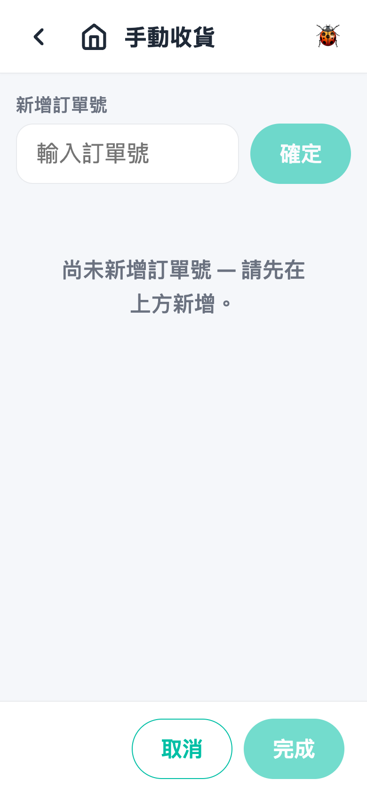
在「新增訂單號」栏输入第一张订单的单号（与送货单一致），点击「確定」。订单会以卡片形式出现在下面。有多张订单就重复输入。注意：
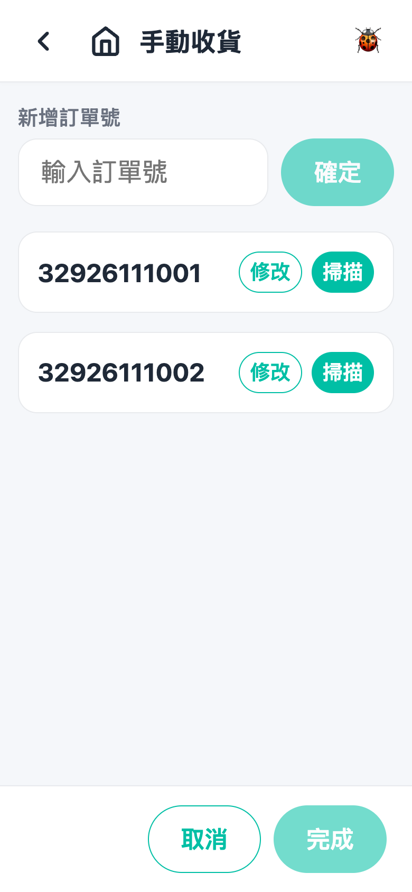
在要收货的订单卡片上点击「掃描」。画面顶部会显示「掃描到 ＜訂單號＞」，表示现在扫描的货会计入这张单。
用机身扫描按钮逐张扫描实物上的供应商标签（或者点击右下角相机按钮拍摄标签）。每扫一张：
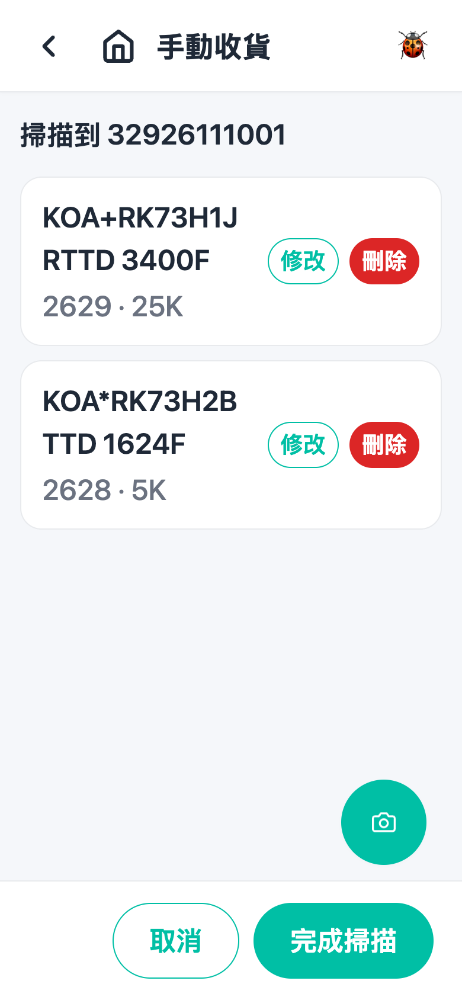
在扫描清单里面，每项货品右边有两个按钮：
确认清单齐全后，点击底部「完成掃描」返回任务页。订单卡片会显示进度（例如 (3/1500)，即 3 项、总数 1500）。如果还有第二张单，返回第 3 步继续。
注意：点击「取消」会放弃这张单刚刚扫描的所有项目，返回扫描前的状态。
所有订单都扫齐货之后（每张单至少要有一项货品，否则「完成」按钮无法点击），在任务页底部点击「完成」，再在确认窗口点击「確定」。系统会建立收货单和上架任务，显示「手動收貨已完成。」，然后自动跳转到「上架」页面继续上架。
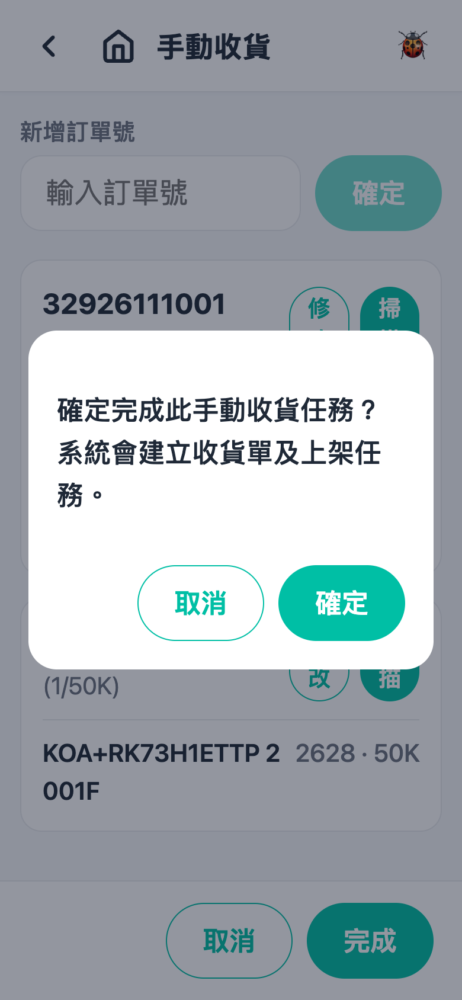
Q：扫不到码／扫完没有反应？
A：先确认在「掃描」画面（顶部有「掃描到 ＜訂單號＞」）。换个角度再扫，或者改用右下角相机按钮拍摄标签。锁定品牌后，扫描器只会辨认该供应商的码制，属正常。
Q：提示「無法從標籤讀取料號。」
A：该标签不符合任何供应商模板。检查标签是不是这批货的、有没有破损；必要时通知主管更新供应商模板。
Q：提示「此任務已鎖定品牌 …，不同品牌的標籤請另開任務。」
A：一个手动收货任务只可以收同一品牌。先完成（或取消）现在这个任务，再为另一个品牌开新任务。
Q：扫错了／数量不对怎么办？
A：未提交前都可以在扫描清单用「修改」改数量，或者「刪除」整项再重扫。提交了之后就要通知主管处理。
Q：点击「取消」会不会丢失数据？
A：任务页点击「取消」会问你「放棄此手動收貨任務？所有已輸入的訂單及貨品將會刪除。」——确定后全部清空。扫描画面的「取消」只是放弃那张单新扫描的项目。
Q：「完成」按钮灰色无法点击？
A：每张订单至少要扫入一项货品。检查是不是有一张单还是空的；不需要的单，卡片上「修改」旁边没有删除按钮——可以清空后重新开始（取消任务），或者确保每张单都有货。
本功能用于在内地仓（CN 收货流程）核对「PDF 上傳」路径的收货单：管理员在后台上传客户收货 PDF、OCR 识别出预计项目并确认之后，该单会进入待扫描状态；操作员在 PDA 上逐件扫描实物标签，系统自动将扫到的数量计入对应料号，核对完成后才会正式收货并建立上架任务。（「手動收貨」路径本身已是扫描收货，不会出现在这里。）使用人：仓库操作员。
在主页点击「收貨掃描」磁贴，进入待扫描收货单列表。画面顶部有提示「待掃描的收貨單 — 掃描實物標籤以核對項目。」，下面每张单显示：批次号、发票号、送货日期，以及进度（例如「2/5」代表 5 项中已处理 2 项）。
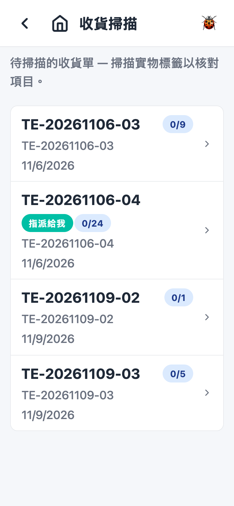
如果没有任何单，画面会显示「沒有待掃描的收貨單。」
点击要处理的那张单，进入扫描详情页。顶部的单据卡显示批次号、「發票號」、「送貨日期」和「進度」（总已扫描数量 / 预计数量，例如「150 / 500」）。
下面按料号分组，每款料一列，显示：
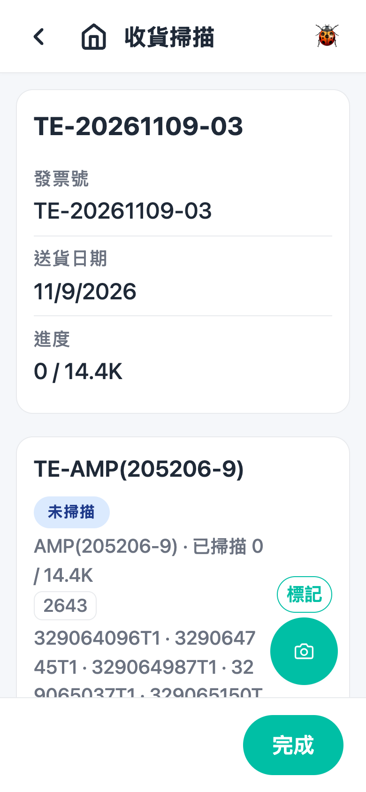
对着每件货的供应商标签，用 PDA 扫描按钮扫描；没有硬件扫描时可以点击右下角的相机按钮拍摄标签。每次扫描系统会：
同一款料分几张 PO 也无需选行，系统会自动按先后次序扣数。
如果某款料实物有问题，点击该行的「標記」按钮，在弹窗中选择原因：
可以在「標記短缺數量」填短缺的件数（留空 = 标记整条未处理的行），并在「備註（可選）」写明情况，然后点击「標記」确认；取消就点击「取消」。
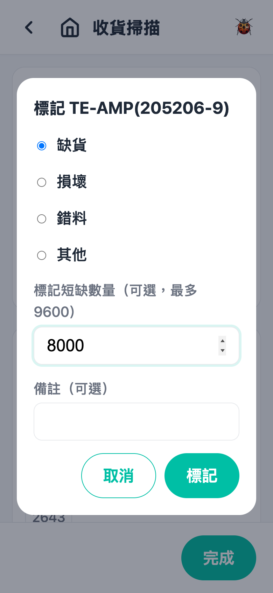
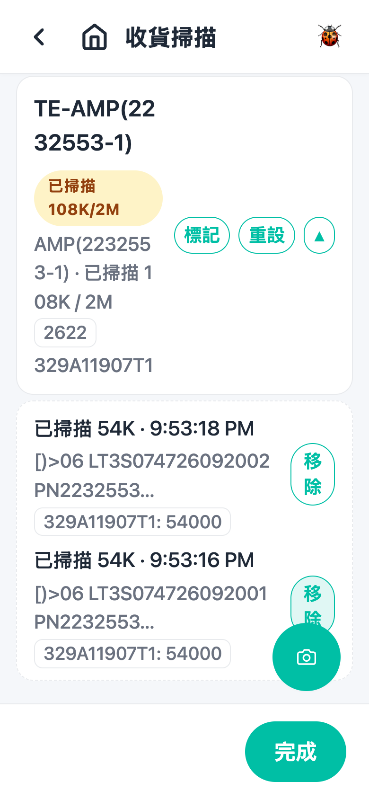
全部核对好之后，点击画面底部的「完成」按钮：
完成后会看到提示「收貨掃描已完成 — 已建立上架任務。」，app 自动转到「上架」页，接着做上架即可。
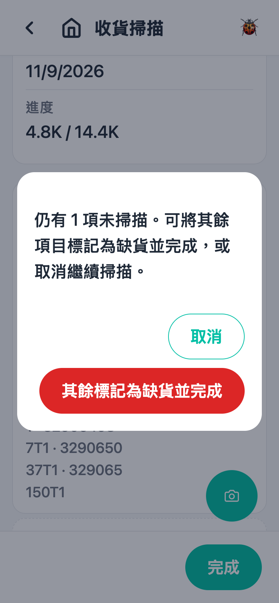
Q：为什么列表里找不到我那张单？
A：先询问管理员 PDF 上传和 OCR 确认了没有 — 未确认的单不会进入此列表。另外有指派负责人的单，只有被指派人才看得到。
Q：扫了标签但提示「此標籤與此收貨單的任何項目不符」？
A：该单没有这款料。先核对实物和单据是否同一批；是就送回给主管处理，不要勉强继续扫。
Q：提示「此標籤已掃描過。」但我确定没有扫过？
A：同一张标签在本次工作期间只计一次。可能之前已经扫过 — 点击该料的「▾」查看扫描记录确认；确实要重扫，先「移除」那笔记录或者「重設」整款料。
Q：扫完数量多过单上的数，怎么办？
A：徽章会变「數量不符」并弹出「超收」提示。先数清实物；多扫了就用「▾」→「移除」扣回，确实超收就照实完成，等管理员跟进。
Q：点击「重設」会不会影响其他料？
A：不会，只清除那一款料的扫描和标记。
Q：有些货根本没到，怎么完成？
A：可以直接点击「完成」，在确认弹窗选「其餘標記為缺貨並完成」，系统会自动将未扫的数量标记为缺货；或者先用「標記」逐款注明原因。
上架是将收货后放在收货区的货品，放上仓库货架的工序。收货完成之后，操作员用 PDA 扫描货品标签和货架条码，将每件货登记到实际位置；全部上架完成后，库存才可以供拣货使用。本章适用于仓库操作员日常上架工作。
在主页点击「上架」方块。画面列出所有待上架的收货单／任务（提示文字：「仍有庫存留在收貨區的收貨單。」）。每行显示单号、待上架项数和状态标签。
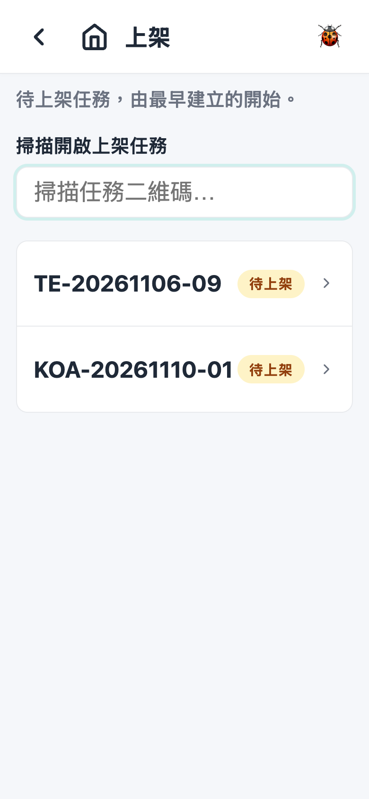
点击要处理的那一行，进入「上架详情」页。页顶显示单号和状态，下面列出供应商、送货日期等资料。
注意：如果该单有「⚠ 過期」警告标签，表示之前有标签日期码过期，需要管理员处理，但上架工作可以照常进行。
画面以「一个料号一张卡」显示所有物料，每张卡可以看到：
点击卡可以展开，查看每行明细和已扫描记录。已经上完架的卡会变灰，标示「已完成」。
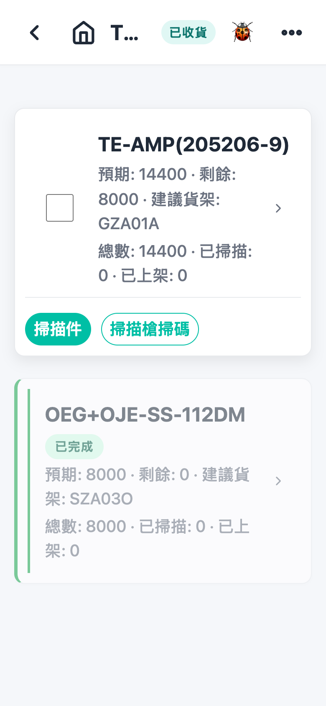
对每件货做以下其中一种操作：
扫完未选货架的件会先进入「待上架」清单（展开物料卡可以看到）；扫错了可以在该行点击「移除掃描」删除。
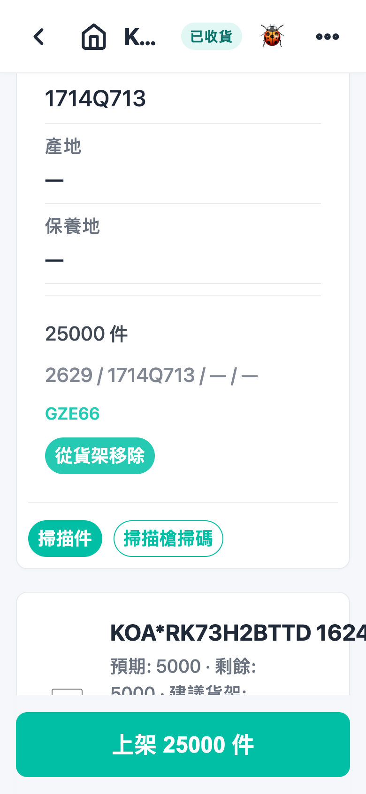
小贴士（视仓库设置而定）：
对着货架用扫描枪扫货架条码。画面顶部会出现「貨架：XXX」横幅，表示已选择这个货架。
想换货架，直接扫另一个货架条码；想取消已选的货架，点击横幅右边的「×」。
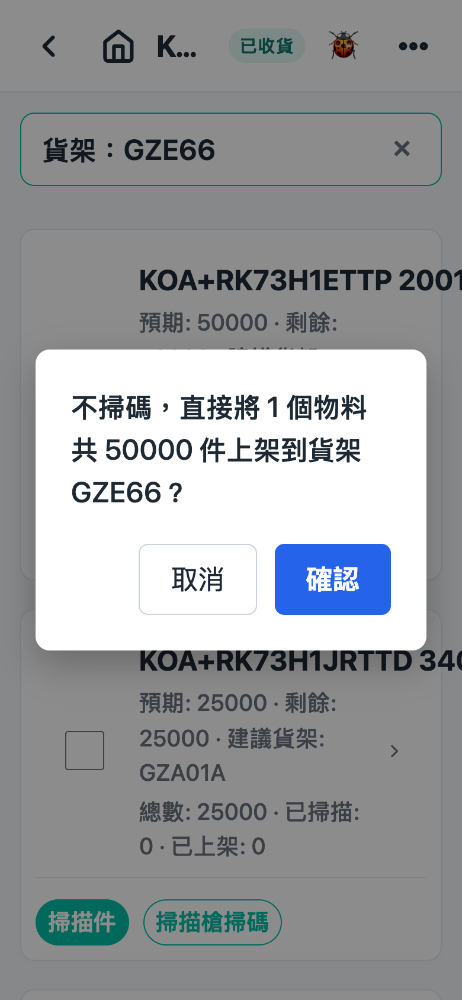
重复第 4–5 步，直至每种物料的「已上架」等于「總數」。全部完成后该单会自动结束，无需点击任何按钮，会从列表中消失。
如果上错了货架，可以展开该物料卡，在已上货架的记录点击「從貨架移除」，确认后库存会退出货架，再重新扫正确货架。
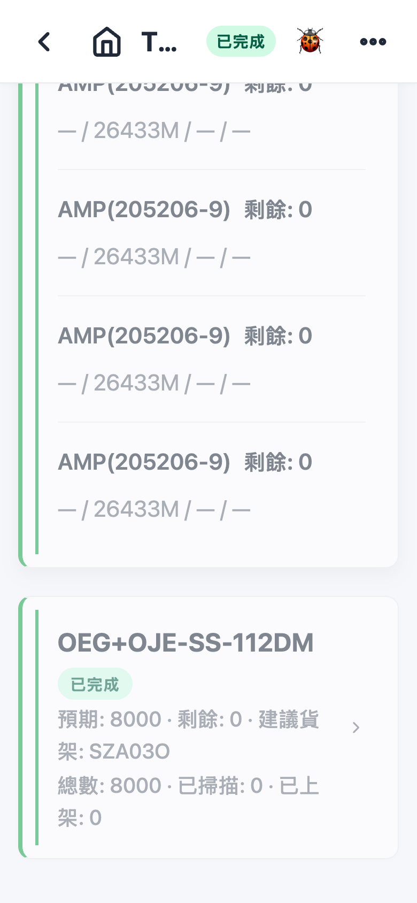
Q：扫了标签，但提示「掃描料號與物品不匹配」？
A：该件货不属于这张单，或者你启用了「掃描槍掃碼」指定了另一种物料。先点击「取消掃描槍」解除，再核对手上该件货的料号是否这张单的。
Q：提示「此標籤已掃描過」？
A：同一件货不可以扫两次。如果确实重复扫了，跳过即可；如果之前扫错了，先在物料卡上「移除掃描」或「從貨架移除」，再重新扫。
Q：出现「掃描 COO／COW 與目標不匹配」？
A：标签上的产地与收货时申报的不同。先停下来，核对是否拿错货，必要时通知主管后再继续。
Q：为什么列表看不到我那张单？
A：可能是收货未完成、该单已经上完架，或者任务指派给了另一位同事。请与主管确认指派和单的状态。
Q：扫了货架但件货没有放上去？
A：扫货架时如果系统弹出「將 N 件放到貨架 XXX？」，要点击「確認」才算完成。点了取消的话，该件货还在待上架清单，可以选好货架后在该行点击「上架到貨架」逐件放入。
Q：弹出「日期碼過期」弹窗，怎么办？
A：点击「知道了」后扫描仍然会入账，可以继续上架；但该单要等管理员处理了警告才会自动完成。照常工作，通知主管即可。
临时上架用于将没有收货单的货品直接放上货架，例如旧仓存货、写出后退回的货、或者任何需要重新入库的散货。仓库操作员在 PDA 上扫描货品标签、选定位置和货架，一次确认入库。如果货品是跟收货单回来的，请使用「上架」（Put Away）流程，不要使用本功能。
在主页点击「臨時上架」tile。画面会载入品牌和位置清单，请稍等片刻。
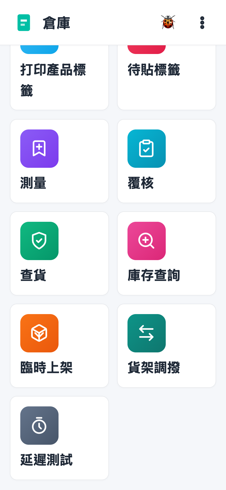
点击「品牌」下拉框，在「選擇品牌」清单中选择货品的品牌（可以打字搜寻）。品牌决定了标签的解析方式，必须选对。
点击「位置」下拉框，选择货品要入库的库位。此位置会套用到之后扫描的所有货品，没有逐件选择位置的功能。
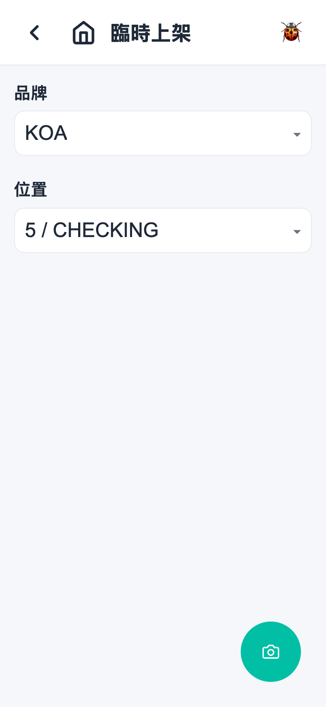
用扫描器扫描货架上的二维码。扫到后画面顶部会出现蓝色货架横幅，显示「貨架 ＜貨架編號＞」，并提示「已選擇貨架 ＜編號＞」。扫错了可以点击横幅右边的「✕」清除再扫。
注意：货架只可以扫描选择，没有下拉框可以选择。
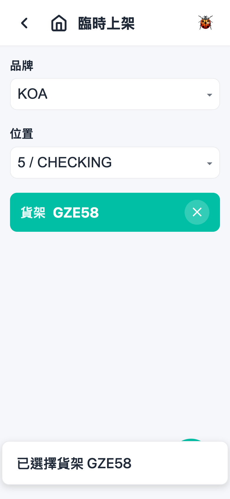
扫描成功后，货品会加入「項目」清单，显示料号、数量、日期代码（Date Code）、批次代码（Lot Code）和 COO（如有）。重复扫描同一张标签会被拒绝，并提示「此標籤已掃描過」或「序號 ＜序號＞ 已掃描過」。
提示：如果标签本身没有日期代码，系统会自动填入今天的日期代码。
在「項目」清单里面可以：
扫齐货品并选好货架后，画面底部会出现蓝色大按钮：「將 N 項（M 件）放到貨架 ＜貨架編號＞？」。核对数量无误后点击此按钮提交。
成功后会提示「已將 N 項放到 ＜貨架編號＞」，项目清单和货架会清空（品牌和位置保留），可以直接继续扫描下一批同品牌的货。
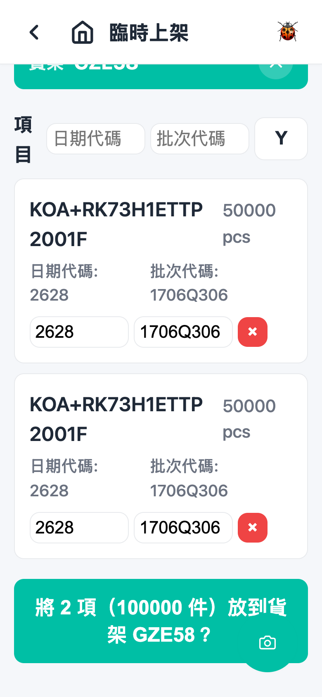
Q：扫完标签没有反应，提示「無法解析掃描」？
A：多数是品牌选错，标签格式对不上。请检查「品牌」是否正确；如果相机拍的标签太模糊或者太多杂物入镜，可以改用扫描枪扫二维码，或者单独拍摄标签。
Q：为什么没有货架可以选择？
A：货架不是用下拉框选择的，一定要扫描货架上的二维码。扫到之后顶部会出现蓝色货架横幅。
Q：提示「請為所有項目選擇位置」？
A：即是尚未选择「位置」。返回顶部「位置」下拉框选择一个，再点击确认按钮。
Q：同一卷货扫了两次会怎样？
A：系统会拒绝第二次扫描，提示「此標籤已掃描過」或「序號已掃描過」，不会重复入库。
Q：扫错了一件货怎么办？
A：在该项目右边点击红色「×」删除，之后可以重新扫描。
Q：提交时出现「錯誤：…」？
A：请记下错误讯息（例如料号在系统找不到），通知主管或系统管理员处理；未成功提交的项目仍在清单中，问题解决后可以再次点击确认。
货架调拨用于将货品从一个货架搬到另一个货架 — 例如整理货架、合并散货，或在没有收货单／拣货单的情况下移动库存。整个流程通过扫描完成：扫源货架 → 扫货品标签（数量直接取自标签，无需手动输入）→ 扫目标货架 → 确认。适合日常仓务操作员使用。
注意：主页的功能方块和页面标题在 app 内显示为「貨架調撥」，即本章所述的同一功能。
在主页点击「貨架調撥」方块，进入货架调拨页面。页面一开始会显示提示「掃描源貨架二維碼」。

用扫描枪对着源货架上的二维码扫描。成功后，页面顶部会出现一条「源貨架」横幅，显示货架编号（例如 A01-01），旁边有一个「清除」按钮；同时弹出提示「已選擇源貨架 xxx」。如果扫错了，可以再扫一次正确的货架码，系统会自动改选；或者点击「清除」重新开始。
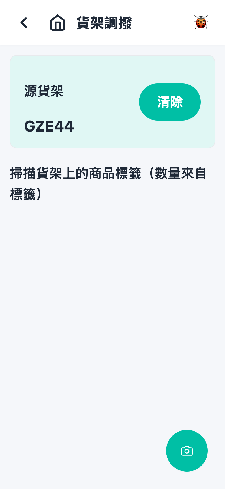
用扫描枪扫描要搬动的货品身上的标签；如果扫不到，可以点击右下角圆形「掃描」按钮，用镜头拍摄标签。系统会以标签上的数量作为本次搬动的数量 — 无法人工修改数量。
成功匹配后，页面会显示「匹配的商品」卡片，包括：料号、WCL 料号、日期码、批次号、原产地／原产国、移动数量、可用数量。同时弹出提示「已在源貨架匹配 xxx」，下方提示改为「掃描目標貨架二維碼」。
如果该货架上没有此货品，或可用数量不足，会弹出红色错误提示，检查后重新扫描即可。
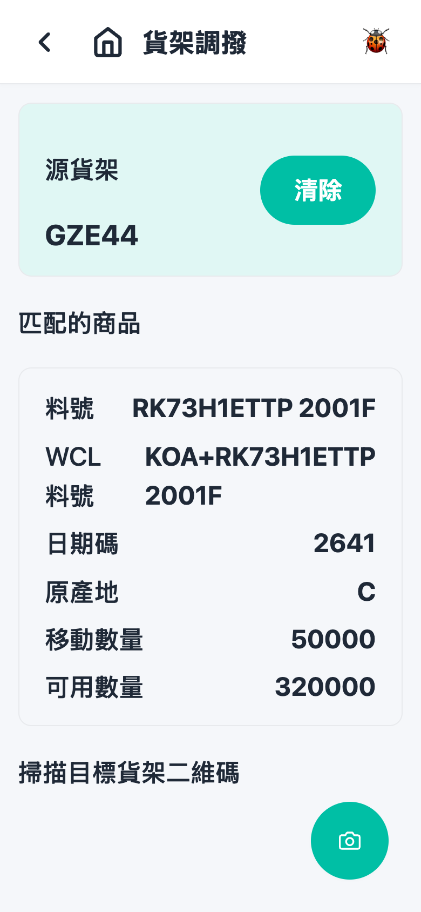
用扫描枪扫描目标货架的二维码。注意不能扫描源货架（会弹出「目標貨架不能與源貨架相同」）。扫描成功后会立即弹出「確認貨架調撥」窗口。
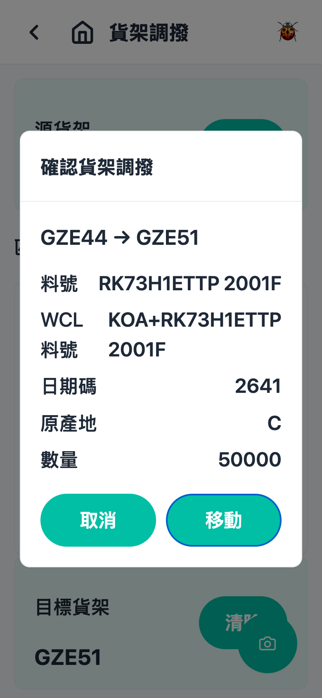
确认窗口最上方会显示搬动路线，例如「A01-01 → B02-03」，下面列明料号、批次资料和数量。
确认完成后，源货架会保留在顶部，只有货品和目标货架被清空。从第 3 步开始扫描下一件货品标签即可继续。
如果要更换另一个源货架，点击源货架横幅上的「清除」按钮，从第 2 步重新开始。
Q：为什么扫描货品标签没有反应，还弹出「請先掃描源貨架」？
A：必须先扫描源货架的二维码，才能扫描货品标签。查看页面顶部是否有「源貨架」横幅，没有的话先扫货架码。
Q：扫完货品标签弹出「該貨架上沒有匹配的庫存」？
A：表示系统在你扫描的源货架上找不到该货品（料号、日期码或批次对不上）。请检查：1) 你是否站在正确的货架前？2) 货品标签是否最新？3) 货品是否已在其他货架？可以使用「庫存查詢」功能查询该货品的实际位置。
Q：弹出「該貨架上未分配庫存不足」是什么意思？
A：货架上虽然有货，但部分已被拣货单预留，剩余的未分配数量少于标签上的数量。这些已预留的货品不能搬动，如有疑问请通知主管处理相关拣货单。
Q：弹出「無法解析標籤」？
A：扫到的内容不是系统能识别的货架码或产品标签。确认你扫描的是正确的标签（不是外箱运输标签），清洁镜头／对准后再扫；仍然不行就改用右下角「掃描」按钮用镜头拍摄一次。
Q：扫描目标货架时弹出「目標貨架不能與源貨架相同」？
A：你扫回了源货架。请扫描另一个货架的二维码；如果看到「貨架不存在」，表示扫到的码不是有效的货架码。
Q：确认窗口点击了「取消」之后，是否需要从头再来？
A：不需要。已匹配的货品卡片会保留，直接再扫描正确的目标货架即可再次确认。
拣货是按照拣货单，将货品由货架／收货纸箱取出、扫码记录、装入出货箱的工序。当办公室已经将订单分配好库存（状态「已分配」），操作员就会在 PDA 上用到这个功能。拣货完成之后，订单才会进入下一步：打印标签／贴标签、测量（量箱）、复核——视仓库设定开启了哪些工序。
在主页点击「揀貨」图标。列表按送货日期分组（最早的单排最前），每行显示单号、状态徽章和摘要。
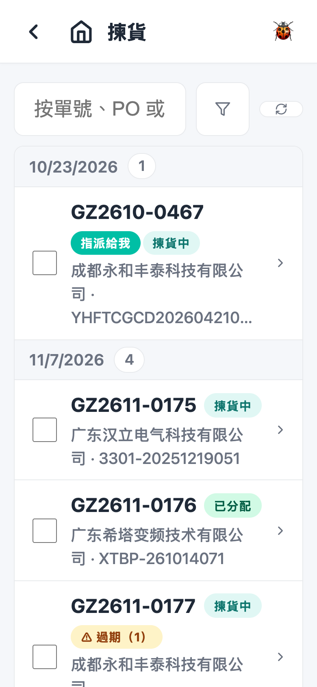
点击你要处理的那张单，进入拣货详情页。顶部显示单号和状态；右上角菜单可以查看客户、送货日期、采购单号、收货方等资料。
注意事项：
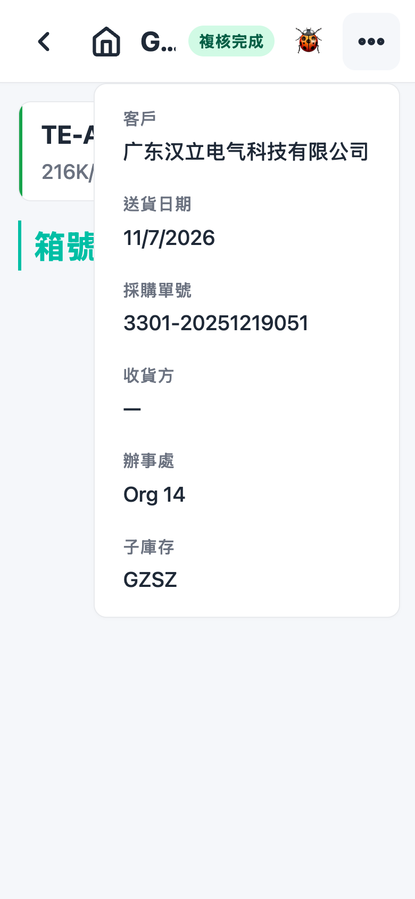
页面列出每个料号一行：折叠时显示进度（例如 2K/3K）和剩余货在哪里取（货架、箱号或纸箱 CTN）。点击一行可以展开，看到：
对准物料标签扫描。每次扫描即时生效，无需再点击确认：
注意事项：
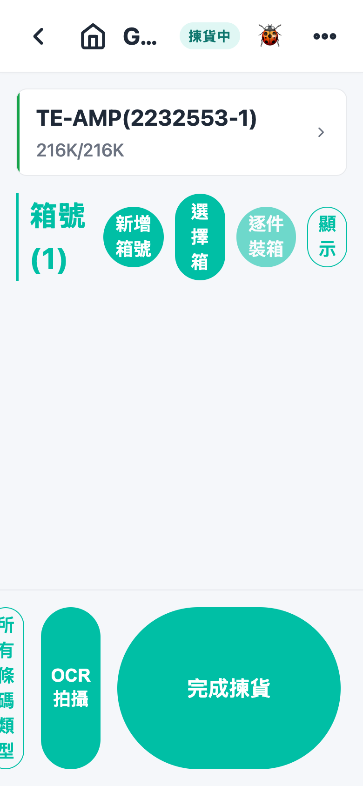
拣好的包裹要装入出货箱。「箱號」区域在页面下方，点击「顯示」展开：
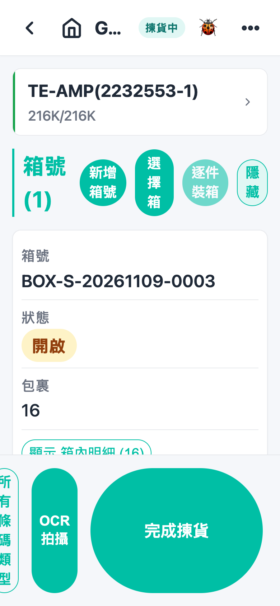
当所有料都扫齐并全部入箱，页面底部会出现「完成揀貨」按钮。点击它确认：
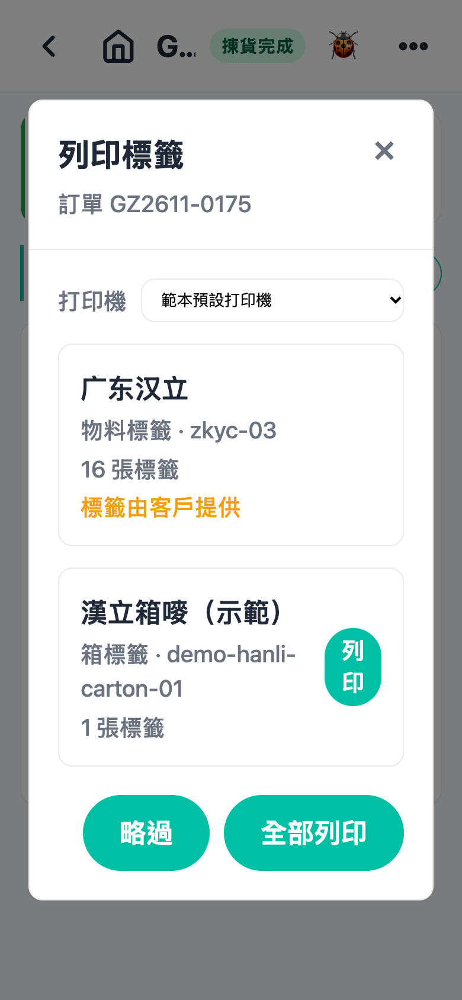
如果拣不齐、损坏、找不到货等：在拣货列表勾选有问题的单（可选多张），底部点击「匯報問題」，选择原因（找不到、损坏、数量不符、发错料、超发、质量拒收）、填写数量和备注，点击「確認」提交。完成后列表顶部会显示「已上報 N 個問題」。
Q：扫描枪扫完无反应？
A：先确认标签条码类型——如果是纸箱条码，点击底部「所有條碼類型」开放解码再试。仍然不行就用「OCR 拍攝」拍摄标签代替。
Q：扫完弹出「該標籤沒有匹配的項目/分配」？
A：这个料不属于这张单，或者已经扫齐。核对料号；如果是跨单装箱，请先用「掃描物料入箱」武装目标箱再扫。
Q：点击「完成揀貨」失败，提示「尚有已揀包裹未裝入出貨箱」？
A：有包裹扫了但未入箱。去「箱號」区域用「全部加入」或「逐件裝箱」处理完毕，再点击完成。
Q：提示「此訂單有 N 條未解決的日期碼過期警告」？
A：之前扫过过期 Date Code 的货，管理员未处理。通知办公室解决警告后，再点击「完成揀貨」。
Q：装箱时提示 COO 混箱错误？
A：一个箱只可以装同一产地的货。将不同产地的包裹分开装另一箱。
Q：该单显示「此訂單正由 xxx 揀貨——唯讀」，我无法操作？
A：同事正在处理这张单。请选择另一张单，或者请同事离开该页；锁定最迟 10 分钟后自动解除。
Q：扫错货怎么办？
A：在该包裹点击「移除掃描」并确认，库存会退回、可以重新扫。已入箱的包裹要先在箱里面「移出」才可以移除扫描。
贴标是拣货完成之后、测量／复核之前的一道工序：订单的标签已在「打印標籤」那一步印好，这一步是确认标签已经贴到货上。操作员在此画面可以重印标签（例如印坏了）、查看哪些标签由客户提供，贴好之后点击「完成貼標籤」，该单才会进入测量／复核。一般由包装台的操作员负责，任何操作员都可以执行。
在主页点击「待貼標籤」tile。画面列出所有等待贴标的订单，最近更新的排最前。
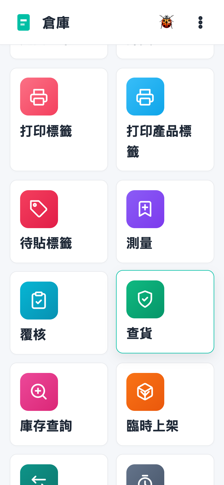
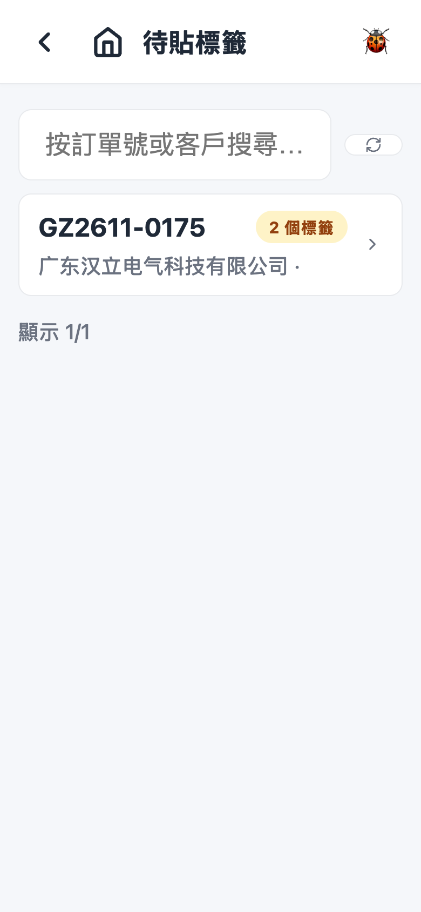
点击该行进入详情页。页顶显示订单号、状态、「客戶」及「總數」（例如「2 箱 · 5 項」）。
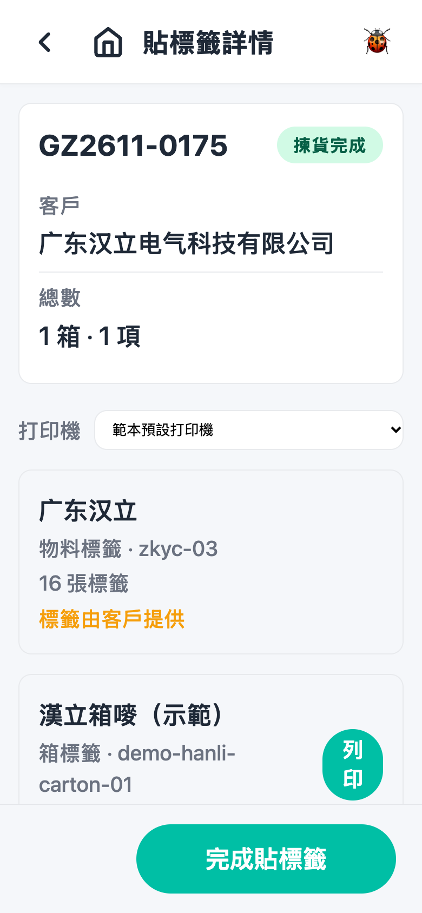
页面列出该单符合的标签打印规则，每条规则一行，显示规则名、标签类型（箱标签／物料盒标签／物料标签）、范本及「X 張標籤」。
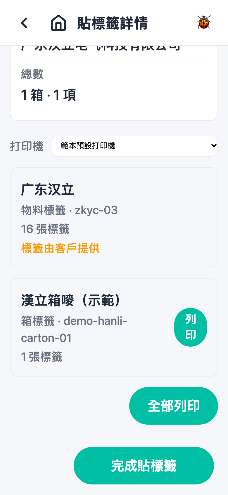
将标签逐款贴上对应的箱／盒／物料，核对无误后，点击画面底部的「完成貼標籤」，在弹出的确认框（「確認訂單 X 已完成貼標籤？」）中点击确定。看到「貼標籤已完成」提示后会自动返回列表，该单的箱便会进入测量／复核。
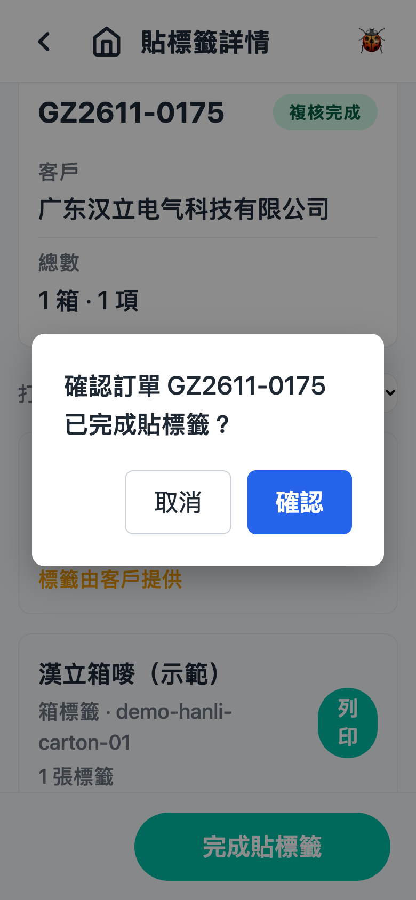
Q：列表找不到该单？
A：可能（1）拣货尚未完成，或「打印標籤」步骤未完成；（2）该单指派了给其他同事，只有他能看到；（3）该单不符合任何标签规则，根本无需贴标；（4）已经有人完成了。可尝试用搜寻框查找订单号。
Q：进入详情页，但弹回列表并显示「該訂單已完成貼標籤」？
A：有另一位同事（或管理员）已完成该单，属正常情况，无需再处理。
Q：点击「列印」之后变成「列印失敗——點擊重試」？
A：通常是打印机问题（缺纸、离线、选错打印机）。检查打印机，有需要时在「打印機」下拉选回正确的机器，再点击该按钮重试。
Q：「標籤由客戶提供」那款怎么办？
A：系统不会打印此款。等客户的标签送到，贴上货即可；没有打印此款也一样可以点击「完成貼標籤」。
Q：误点了「完成貼標籤」但标签未贴好？
A：点击后会先出现确认对话框，未确认前可以取消。如果真的已完成但标签未贴，要立即通知主管／管理员处理，因为该单已进入测量／复核。
Q：规则显示「已不再符合此訂單」，还需不需要贴标？
A：一般是规则被修改过。按手上已有的标签贴好，然后点击「完成貼標籤」即可；如有疑问请咨询主管。
测量是拣货完成之后、出货之前的工序：操作员要逐箱核实箱内包裹（扫描每个包裹的 QR code），然后输入箱的尺寸和重量（净重、毛重），最后「確認箱號」将箱关闭。关闭箱号即代表测量完成；如果系统开启了覆核步骤，关箱后会自动产生一张覆核任务。这个功能由负责测量／包装核实的仓库操作员使用。
在主页点击「測量」图标。画面会显示所有待测量的箱，按拣货单分组（标题显示「揀貨單 {單號}」）。页面上方有提示「按揀貨單分組的待測量箱號（揀貨已完成）」。如果没有任何箱，会显示「暫無待測量的箱號。」
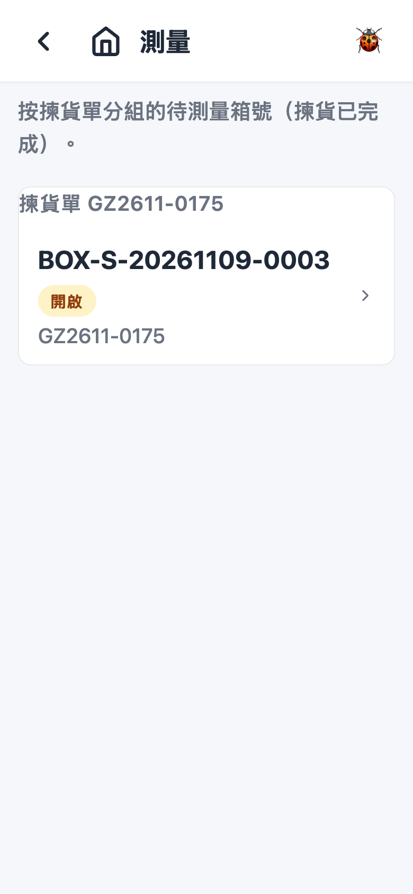
两个方法，选一个：
箱页顶部显示「箱號 {箱號}」和状态标签，以及相关拣货单号。下面列出箱内包裹，标题是「包裹 — 已查貨 {已核實數} / {總數}」：
操作：用扫描枪逐个扫包裹上的 QR code。扫中后该行会即时更新（圆点由黄转绿，数量跟着增加），画面提示「掃描成功」。部分数量已扫时会显示「已掃/總數」（例如 30/50），可以继续扫到齐为止。
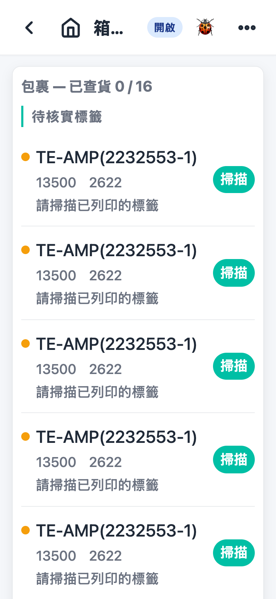
当所有包裹都核实完毕，系统会自动弹出「箱號測量」视窗（如果没有弹出，可以点击右上角菜单的「輸入測量資料」）。填写：
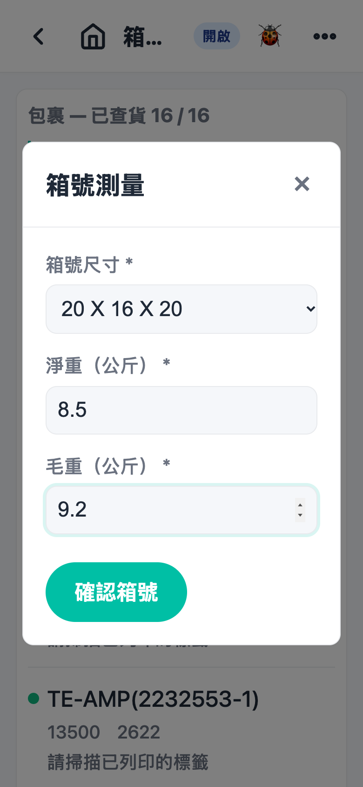
检查资料无误后点击「確認箱號」（点击之后会显示「確認中…」）。系统会一次保存测量资料并关闭箱号 — 关箱即是完成测量，无需再点击其他按钮。完成后自动返回测量列表，已关闭的箱会在列表消失。
Q1：测量列表是空的，但我明明有货要测量？
A：测量列表只显示「揀貨已完成」的箱。请先确认相关拣货单已完成拣货；如流程设有打印标签／待贴标签步骤，也要等这些步骤完成。另外，如果箱已指派给其他同事，你的列表会看不到 — 请向主管查询。
Q2：扫箱号 QR code 弹出「列表中找不到與『…』相符的箱號。」怎么办？
A：该箱可能未完成拣货、已关闭，或不是你负责。请核对箱号是否扫错，再在列表查看该箱是否存在。
Q3：扫包裹 QR code 弹出「沒有與此標籤相符的未核實包裹。」
A：代表扫的标签和箱内任何未核实包裹都对不上。检查是否扫错货、扫错箱，或者该货根本不属于这个箱；必要时通知主管。
Q4：弹出「已全部複核掃描（X 件）。」是什么意思？
A：这个物料已经扫够数量，重复扫描不会再计入。可以继续扫其他未齐的物料。
Q5：「確認箱號」按钮是灰色无法点击？
A：三个字段全部必填：箱号尺寸要已选择，净重和毛重要是大于 0 的数字，而且毛重不可以小于净重。检查每个字段再试。
Q6：相机扫标签之后弹出的核对画面怎么用？
A：画面会显示拍到的标签内容和系统辨认结果，检查无误后确认即可计入；如果拍得不清楚，可以选择重拍一次。
覆核是出货前的第二重检查：由另一位同事（或者同一位同事再次）将箱内每一件货重新扫描一次，确保箱内实物与系统记录一致，箱号才可以进入出货阶段。一个箱号一张覆核任务，在箱号关闭（或者没有开启测量步骤时在贴标签／拣货完成）之后自动产生。此功能由负责覆核的仓库操作员使用。
在主页点击「覆核」tile。画面显示所有待覆核的箱号（每个箱一张任务），每行显示箱号、相关拣货单和状态标签。列表顶部有提示「待覆核的已關閉箱號。」如果没有任务，画面会显示「暫無待覆核的箱號。」。
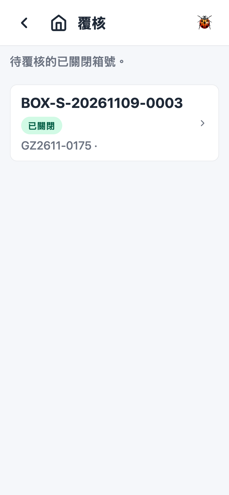
有两个方法打开箱号页面：
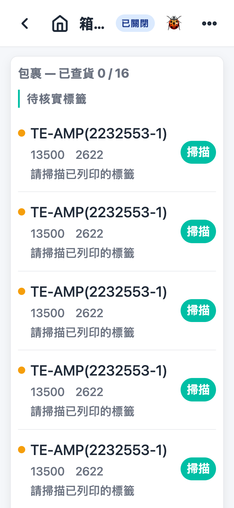
箱号页面会列出箱内所有包裹和扫描进度（顶部显示「包裹 — 已查貨 x / y」）。画面最多分两个区域：
注意事项：
如果发现箱内资料（例如尺寸、重量）要修改，而箱状态是「已關閉」，页面下方会有「重新開啟箱號」按钮。点击之后箱会变回「開啟中」，所有包裹的已核实标记会清零，要重新扫完所有包裹才可以再次关箱。
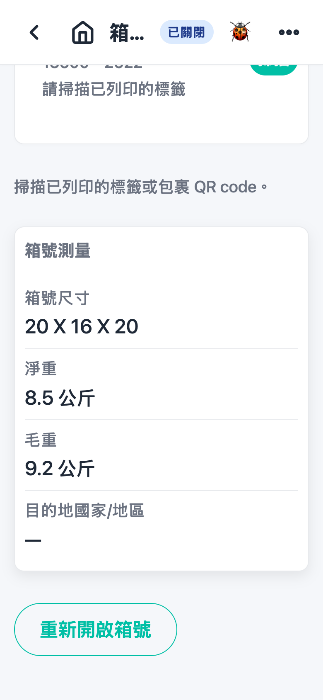
开启中的箱扫齐所有包裹后，会自动弹出「箱號測量」窗口（或者在页面右上角菜单点击「輸入測量資料」）。可以修改「箱號尺寸」、「淨重（公斤）」（系统会按料件重量自动预填）、「毛重（公斤）」；「目的地國家/地區」在 PDA 上是只读。填好点击「確認箱號」，箱会重新关闭。

当以下条件全部达成——所有包裹扫齐、所有已打印标签（包括箱标签）已扫、箱状态是「已關閉」（如果没有开启测量步骤，箱可以是开启中，完成时系统会顺手关箱）——页面下方会出现「完成覆核」按钮。点击它，任务完成，画面自动返回覆核列表，该箱进入出货阶段。
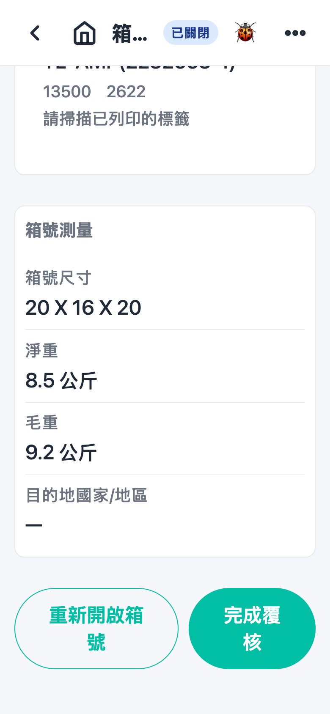
Q：列表找不到我们要覆核的那个箱？
A：可能是任务指派给了另一位同事（只有他才能看到）；也可能箱还未完成前置工序（例如贴标签未做），或者已经覆核完。可以先点击列表右上角重新整理。
Q：扫描枪扫完没有反应？
A：先确认该箱还有待覆核项目（全部扫齐后扫描会停用）；试试扫清楚一点，或者改用该行的「掃描」按钮用相机拍摄标签。
Q：扫描后弹出「沒有與此標籤相符的未核實包裹。」？
A：即这张标签不属于此箱，或者对应包裹已经扫齐。核对一下是否放错了其他箱的货。
Q：为什么没有「完成覆核」按钮？
A：按钮只会在全部条件达成后才出现：还有包裹未扫齐（进度 x/y 未满）、有已打印标签未扫、或者箱未关闭。逐项检查页面上还有没有黄色圆点的行。
Q：点击「完成覆核」弹出「完成覆核前必須掃描所有已列印的標籤（箱標籤及物料標籤）」？
A：有已打印的标签未扫。回到「待核實標籤」区域，将显示「請掃描已列印的標籤」的行和最顶部的「箱標籤」行逐一扫完再点击。
Q：按错「重新開啟箱號」怎么办？
A：不用担心，箱只是变回「開啟中」。重新扫完所有包裹，再在「箱號測量」窗口点击「確認箱號」关箱，之后照常完成覆核。
「查货」是每日收工前的货架对账工序。系统每日会自动为每个当日有库存异动（收货、上架、拣货、调整）的货架生成一张查货任务，列出该货架当日的异动摘要。操作员走到实际货架，核对架上货品及数量与系统记录是否一致，一致则一键确认。此工序只做「确认」，不会改动任何库存；如发现不对账，须使用正常的调整／上架／重扫流程处理。
在主页点击「查貨」图标。画面顶部会显示提示「每日貨架異動摘要 — 一鍵確認。」，下方为任务列表。

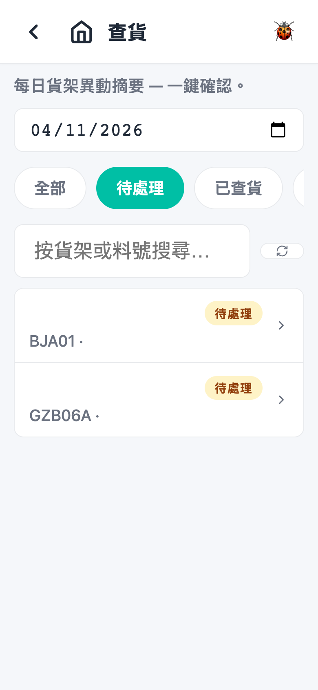
点击一张「待處理」的任务卡，进入查货详情页。顶部会显示货架编号及状态标签，下方有「任務日期」、「貨架」、「異動項目數」等资料。
一张任务＝一个货架、一日的异动总结，不是一种物料一张单。
「異動明細」下方每种当日有异动的物料有一张卡，显示：
注意：这是生成任务时的快照，之后再有货物异动也不会更新此画面的数字。
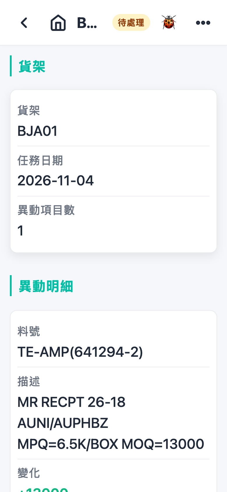
带着 PDA 走到画面显示的货架，逐种物料点算架上实物，与画面的「變化」及「現時總量」对照。
核对无误后，点击页面底部的「確定」按钮（按钮会变为「確認中…」，请稍候）。成功后画面会弹出「任務已確認。」提示，任务状态变为「已查貨」，并记录「確認人」及「確認時間」。
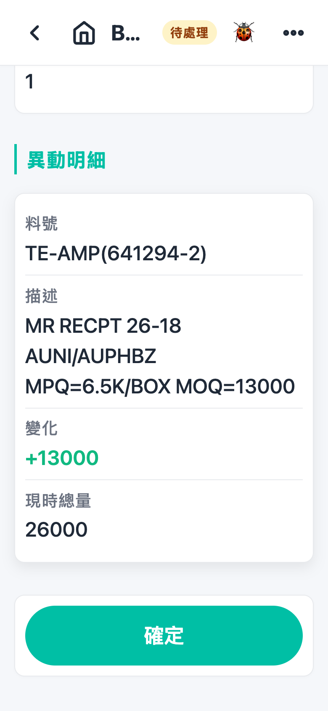
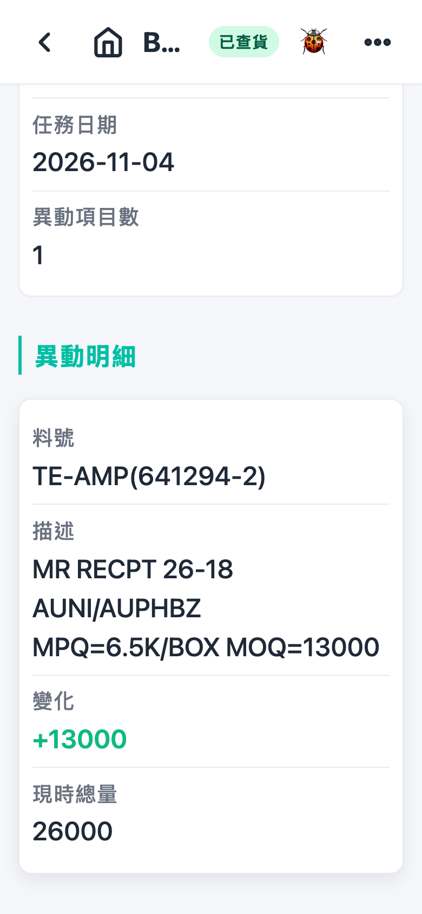
返回列表，重复第 3 至第 6 步，直至当日所有「待處理」任务全部完成。在列表将状态筛选设为「已查貨」，可随时检查哪些货架已确认、由谁确认。
Q：列表是空的，显示「此日期沒有查貨任務。」？
A：即表示该日期没有货架发生库存异动，属正常。先检查日期栏是否选了今日；要查看之前的日期就点击日期栏更改日期。
Q：为什么找不到某个货架的任务？
A：查货任务按「日」生成，只有当日有异动的货架才会有任务。试试将状态筛选设为「全部」，再检查日期是否正确。
Q：为什么没有「確定」按钮可点击？
A：只有「待處理」状态的任务才会显示「確定」按钮。如果任务已经是「已查貨」或「已略過」，画面只会显示确认人及确认时间，无法再点击。
Q：实物与画面数量不符，怎么办？
A：不要点击「確定」。此画面不可以改数。记下是哪种物料、差多少，通知主管，用库存调整／重扫等正常流程修正，之后再回来确认。
Q：点击了「確定」才发现不对账，可以还原吗？
A：不可以在 PDA 还原。「確定」只是确认记录（不改库存），请立即通知主管处理。
Q：为什么我输入关键字搜索找不到任务？
A：搜索栏暂时对手动输入不生效（已知问题）。请改用日期及状态筛选查找任务，问题修复前不要依赖搜索栏。